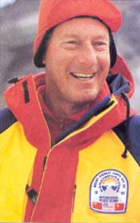
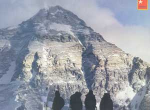
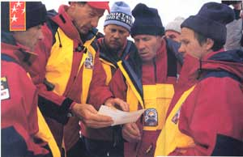
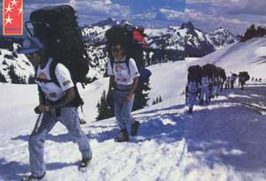
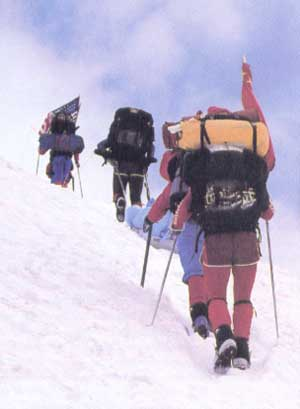

Earth's highest peak is mostly granite, often climbed, and badly littered as a result. But it is also still a pure symbol of reaching high. On Earth Day, a joint Russian-Chinese-American team will attempt the summit of Everest. This time, the symbolism will be more mixed. And richer. Peace and environment.
THE thing about Jim Whittaker is not that he's big, even though he was big even when he was little. It's that he's so damned strong. Somehow, forces such as gravity that challenge us everyday net out as a bit weaker around Whittaker.
Once I visited him at a 40-foot-long cabin he had built out of tons of logs and driftwood he hauled up a cliff from the beach on the Washington coast. The cabin was slightly atilt on its pilings, so he simply jacked it up. All by himself. I looked around for a large blue ox.
Sports Illustrated was right when it gushed that Whittaker was America's strongest mountaineer. That was in 1963, after he had stood on the 29,028-foot summit of Mount Everest, the first American to do so. That seems long ago. It was a year after Silent Spring was published, the same year that civil rights demonstrations erupted in the South, a "hot line" was established between Washington and Moscow, atmospheric nuclear tests were banned, and Kennedy was shot. Jim Whittaker's achievement brought him fame in a time needing heroes. He was lionized: Americans had conquered Mount Everest. Indeed, had it not been for the Revolutionary War, Whit-taker might well be known these days as Sir James.
In high spirits, Jim Whittaker (above) in 1963 became the first American to reach Everest's summit, the highest point on Earth.
But, as he wrote later, "We knew we had not conquered the mountain. Our team struggled for months. We had lost in an ice fall; others lost toes and fingers. We were survivors of the mountain. To claim we had conquered this monument of nature would have been flagrant arrogance, for there was no enemy up there to be conquered ... no enemy but ourselves, our weaknesses and errors."
A big man with big ideas, he looked around for another challenge, and his eye lit on the summit of K2 in Pakistan, the second highest peak on the planet. After one attempt that failed, he led the first American team up that mountain too, in 1978. Then, during descent, it struck him that he was running out of mountains to climb.
A team of climbers sizes up Mount Everest's north face. Looking tranquil in good weather, it will still test every climbing skill.
THATalso seems a long time ago. It was the year the U.S. and Communist China established full diplomatic relations. Now, 12 years later, Whittaker is at it once more: an even bigger, stronger idea. A few years shy of the age when most people retire, he's on the open road again-though there is no road where he's going. He's in the People's Republic of China, shepherding an improbable assembly of former antagonists toward base camp on the Chinese side of Chomolungma, also known as the Goddess Mother of Earth: Everest again.
The team will take the basic route first attempted by the Englishman George Leigh-Mallory in the 1920s-up to a saddle called the North Col and then up the northeast ridge to the summit. When last seen, Mallory and a young Oxford student were inching their way upward about 1,500 feet below the summit. Then darkness and bad weather dosed in. No remains were ever found, except for an ice ax in the snow. Their ghosts, along with the many others lost on this peak, still haunt those who would "conquer" it.
Hey, why an encore? Since Hillary climbed Everest, people have been all over that mountain, even taking live TV cameras up to the top. In fact, to some minds, all those climbers have by now virtually domesticated the peak-in the process strewing and leaving trash everywhere. It's gotten so bad that Hillary himself, in a fit of dismay, recommended that Everest be closed for five years or until someone figures out how to get all the old oxygen bottles and other detritus off its face.
Whittaker quietly disagrees: "To me, the mountains are like church, and people should go to church. You don't close the mountains."
So what's this climb all about? A guy over 60 proving something? No, not this time. Part of the egalitarian rule for this expedition is that those slated to take the last steps to the summit cannot have been there before. In deference to this rule-his own idea-Whittaker will not be among those standing on the highest point of Earth.
The idea is bigger than that.
Wearing their Everest Expedition T-shirts, a pair of Chinese climbers begins a trek up to Rainier's base camp to further test their skills.
A scholar of symbols has said that "of all metaphors, only those pertaining to height, ascent, depth, and descent are axiomatic. Nothing can explain them, but they explain everything." In almost every society we know of, heroic as cents, be they winged or terrestrial, have always bespoken raising oneself up to greater heights of morality, strength, or creativity.
So according to the plan, on April 22, which is also Earth Day, three climbers-a Chinese, a Russian, and an American-will rope themselves together and take the final steps up the last 600 feet of Everest. If one of them falters, either he or she will be hauled up by the other two, or all three will turn around and another three will set forth, until one of the five teams of three has made it.
Even at Rainier, climbers put the new cleanup ethic into practice. On the way down, sleds are loaded with debris-packed bags.
The rope joining the team is as symbolic as the climb itself. The idea is so simple that when it was first proposed in some back room in Seattle where mountaineers get together to swap stories and dreams, everybody laughed. One guy fell off his chair laughing. There were thousands of Russian and Chinese troops glowering at each other across their mutual border, and perestroika hadn't yet made its way into American dictionaries.
That was in 1987, and before long, undaunted by such petty concerns, Whittaker pulled a Kissinger act, powered by his belief that it was people who had to show the leaders of the world what is demanded these days: the twin goals of a peaceful world and a healthy one.
In Beijing, Whittaker asked permission from the Chinese Mountaineering Association to take some Soviet climbers on yet another ascent of Everest. They said, "Mr. Whittaker, we have not had Soviet climbers in this country for 30 years." Whittaker acknowledged that but added that the Chinese had come to his country, bearing Ping-Pong paddles, after a long absence. Now he and the Russians wanted to come to their country with pitons and climbing axes. They sent him off to see the Great Wall and the Forbidden City and, a few days later, said the idea had merit, but they didn't want to invite the Soviets unless they would definitely come.
In Moscow, Whittaker talked to the Soviet Sports Committee; they sent him off to Red Square and Lenin's Tomb and, a few days later, gave him their approval if he could guarantee that the Chinese would definitely accept them into the country. Back in Belling, the Chinese agreed: "Mr. Whittaker, you can bring your Soviet friends to our mountain."
Then he let the Chinese know that he wanted climbers from the People's Republic to participate. They were pleased but reluctant: They said it couldn't be done.
They were nervous that their climbers weren't up to such an ascent and that the country would lose face if it failed in such a competition. Then Whittaker told them about the rope.
He also told them that another part of the plan was that, upon descending, the team would pick up all the trash from previous climbs of the Chinese side and return Chomolungma to a state of undomesticated grace. Before long, an agreement was signed, sealed, and delivered.
In June 1989, the teams joined in a shakedown climb of Washington's Mount Rainier. There was some good-natured clowning before the ascent as the teams assembled in front of hordes of tourists. A Soviet climber donned a Groucho Marx false nose and glasses. "Glass-nose-t," called out Whittaker's wife, Dianne Roberts, administrative director of the Everest climb. There were also poignant moments: When they met, Soviet team leader Cladimir Shateyev and Chinese team leader Liu Da Yi told each other, "It's good that we get together again after 30 years." This was the first time climbers from the three nations would work together. In a way, it was like an international docking in space, except here the crews of three capsules had congregated. After Rainier, the teams tested themselves yet again by scaling Mount Elbrus in the Caucasus, Europe's highest peak.
Peace and environment aloft
NOW,what is called the Mount Everest Earth Day 20 Peace Climb is under way in earnest. By late February, the teams had convened in Beijing, going from there to Lhasa in Tibet via Sichuan Province. Throughout March, they established a string of supply camps-five in all-from 18,000 to 25,600 feet. That will give them three weeks to inch their way to the uppermost camp. On April 22, the first team will attempt the summit. Incidentally, all climbers will be using special Russian pitons, the only kind made out of titanium, a strategic metal mostly used heretofore in making F-14 fighter planes and submarines. "Talk about guns and plowshares," mused Whittaker with a twinkle.
Dramatically enough, the team, which includes three women climbers, has in its possession messages from thousands of people, recorded on compact disc, carrying their hopes for mother earth. Appropriately, many of these messages will come from Mother Earth News itself. The messages will be broadcast from the mountain not only around the world but also outward-to deep space, as a kind of electronic time capsule.
Is this climb purely symbolic, somewhat of a public relations stunt?
Ask the climbers, slogging into a region of near anoxia, watching over their shoulders for storms and avalanches, their lives depending on two other climbers they hardly know, from countries that haven't gotten along, linked together by a rope. Says Whittaker, "Nature is not subterfuge; nature is not politics."
Sometime after Earth Day, the team-successful or not-will descend, hauling tons of junk off the mountain. And their task will continue. They will set about raising funds to reproduce the compact disc with all those pleas for peace and the restoration of health to the planet. And they will send those messages to the attention of political leaders of the world in hopes that those leaders will listen" and, in the manner of the mountaineers, rope up together, keep their eyes on the summit-on the universal goal-and take one step after another, over and over, until it is achieved. There is a creed for this effort, and one that is suitable for the 20th anniversary of Earth Day and for the decades to come. It's a quote from Norman Cousins; "The wild dream is the first step to reality. It is the direction finder by which people locate higher goals and discover their higher selves."
|
PHOTOGRAPS &; DIANNE ROBERTS |
 ART WOLFE |
 |
|
 |
 |
 |